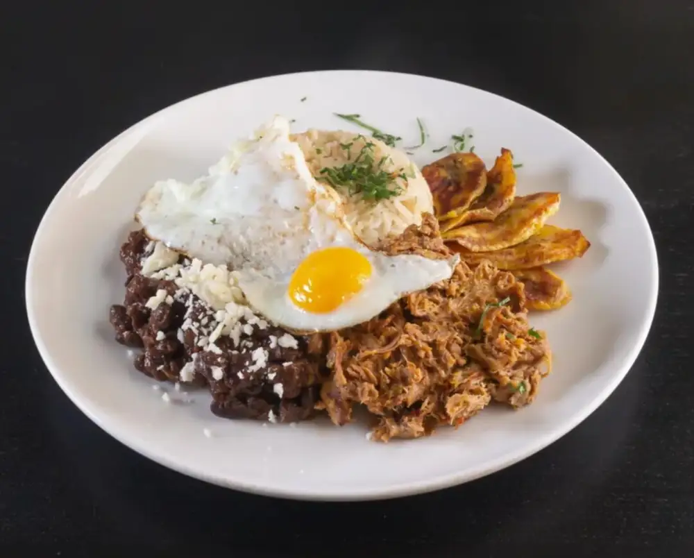
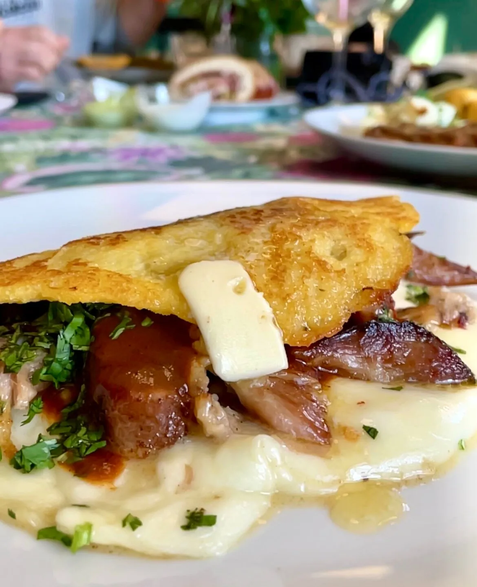
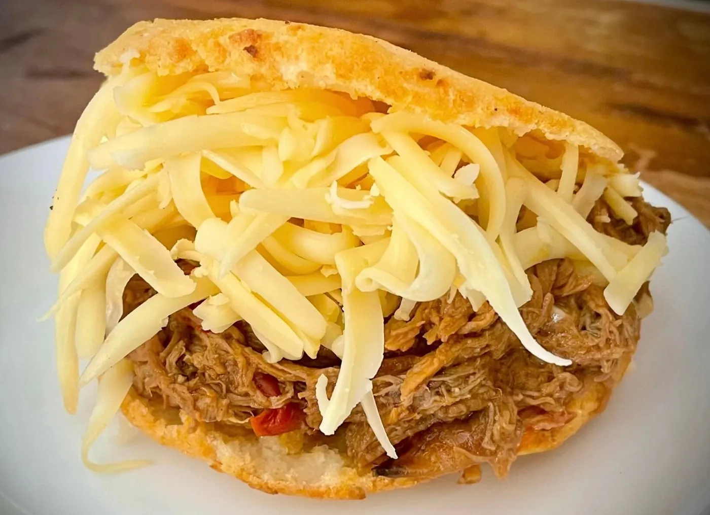

Arepa pelúa
Maíz blanco molido, masa hecha a mano, asada en plancha. Rellena de carne mechada deshilachada y queso amarillo rallado. La más vendida.
Maíz blancoVila Olímpica · Barcelona
Arepas, cachapas y pabellón criollo cocinados como en casa. Cocina venezolana real, abierta los fines de semana, en el centro comercial El Centre de la Vila. Sin atajos: maíz molido en casa, plátano maduro al sartén, carne mechada que tarda lo que tiene que tardar.

01 · El nombre
Cambur pintón es el plátano cuando empieza a tener manchas oscuras y la pulpa se vuelve dulce. Ese es el momento exacto en que se usa para freír, para hacer dulce, para acompañar el pabellón.
En Venezuela hay una palabra para cada estado del plátano. Verde, pintón, maduro, sobremaduro. El cambur pintón es el favorito de las abuelas: ya tiene azúcar suficiente para que se carameliza la corteza al freírse, pero aún tiene cuerpo para no deshacerse en el sartén.
Le pusimos el nombre porque así cocinamos: con paciencia y en el punto justo. La masa de arepa se trabaja a mano, el plátano se elige racimo por racimo, la carne mechada se desmecha caliente sobre la tabla con dos tenedores. Aquí no hay congelados ni atajos.
Abrimos viernes, sábado y domingo. Los venezolanos de Barcelona ya nos conocen. Los catalanes que vienen por primera vez se llevan dos arepas para casa al final de la comida.

02 · La carta
Lo que pide cualquier venezolano cuando entra y lo que terminan pidiendo todos los que vienen por primera vez. Cocina del día a día, sin pretensiones de fine dining.
Maíz blanco molido, masa hecha a mano, asada en plancha. Rellena de carne mechada deshilachada y queso amarillo rallado. La más vendida.
Maíz blancoTortilla gruesa de maíz dulce, doblada con queso de mano fresco y cochino frito en su grasa. Dulce y salado en la misma cucharada.
Maíz amarilloEl plato bandera. Arroz blanco, caraotas negras dulces, carne mechada y tajada de plátano maduro frito. Con huevo encima si lo quieres "a caballo".
Plato banderaPalitos de masa rellenos de queso blanco, fritos hasta que la masa cruje y el queso se estira. Diez unidades. Para abrir mesa o picar entre amigos.
Para compartirPlátano verde aplastado y frito dos veces. Crujiente por fuera, mantecoso por dentro. Llegan con guasacaca (la salsa verde caraqueña).
Plátano verdeLomo de res cocinado lento en su propio jugo con papelón (panela). Carne oscura, salsa dulce de Caracas. Llega con arroz blanco y tajadas.
Cocción lenta03 · La mesa
Los venezolanos sabemos que cocinar venezolano lleva tiempo. Cada plato sale como en casa de la abuela, no como en un fast food. Por eso abrimos solo fines de semana.

04 · Preguntas frecuentes
Las cuatro dudas que llegan al teléfono cada fin de semana. Si la tuya no está aquí, llámanos.
Sí. Viernes de cinco a once y media de la noche; sábado y domingo de una del mediodía a once y media. Cocinar venezolano bien lleva tiempo, y preferimos hacer tres días sólidos antes que cinco sin alma. El resto de la semana descansamos.
Sí, y conviene. El local es íntimo y los domingos al mediodía se llena de familias venezolanas. Llámanos o usa el formulario web con un par de días de antelación. Para grupos de seis o más, mejor con una semana.
Sí. Arepa rellena de queso de mano, arepa reina sin pollo (aguacate, mayonesa, lechuga), cachapa con solo queso, tostones con guasacaca, tequeños. Lo único: avísanos si eres vegano estricto porque el queso de mano lleva cuajo animal.
No. La cocina venezolana base no es picante: es sabrosa, dulce-salada, con cilantro y ajo. Llevamos guasacaca y picante de ají dulce aparte para quien lo quiera, pero el plato base llega sin picar.
05 · Visítanos
Estamos dentro del centro comercial El Centre de la Vila, en planta baja. A dos minutos de la playa de Bogatell, junto a la parada Ciutadella-Vila Olímpica.
Esto era una demo
Esta web era una muestra de lo que podríamos hacer para Cambur Pintón. Si te ha gustado y quieres una para tu negocio, escríbenos — Pedro te responde personalmente y la web final la adaptamos al 100% a tu gusto.
Pedro Núñez · Impacto Digital